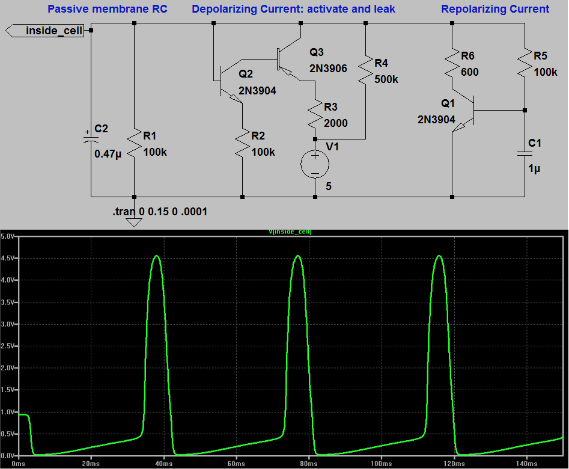
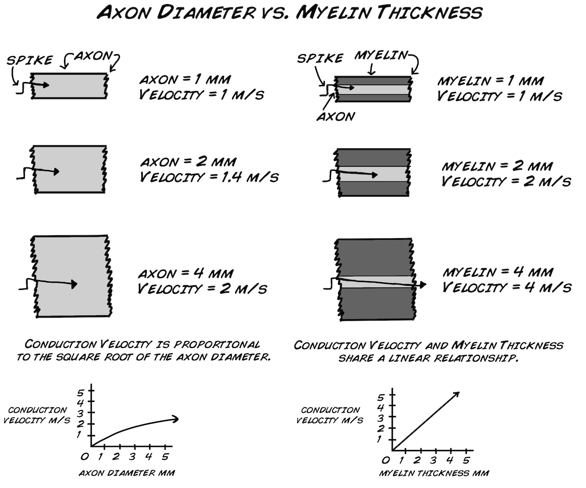

Syllabus
Contents
Syllabus¶
Title: Biology of Electricity
Alternative titles:
Harnessing Bioelectricity
Neuromorphic Design
Building the Brain
Excitable Networks
Target:
20 students? (Start with 10 for first pilot of class?)
NSB, IDEAS, PHYS, BIOL, CIS (, MATH?)
Aims¶
Integrate computational modeling with biological experimentation
Integrate neurobiology, electronics theory, and math (and computer science?)
Provide more math and physics for biologists
Provide more biology for mathematicians and physicists
Access to lower footprint neurophysiology experiments
Schedule¶
With each topic aim for: 1) one shorter day of introducing concepts and computational modeling and 2) one longer day of experiments with circuits and living tissue (students pair up for experiments). The actual scripting of the computational models could be included or provided. Use of the computational models for simulations of neural physiology would be used to supplement experiments on biological tissue.
0: Introduction to BioElectricity¶
1: Passive Spread (and differential measurement)¶
space constant
resistors in series and parallel
spatial summation at synapses
axon diameter and myelination
2: Ionic Basis of Membrane Potential¶
ohmic conductance (V=IR)
current-limiting resistors
Kirchoff’s laws
resistance and conductance
3: Responses to input and Filtering¶
time constant
resistors and capacitors in parallel
current application and voltage measurement
linear differential equations
4: HH action potential and Non-Ohmic Conductances¶
negative resistance (voltage-gated sodium conductance)
summation of dynamic conductances
non-linear differential equations
5: Amplification and Transistor Logic¶
analogy between transistor logic and action potentials
basic amplification principles for recording most biological signals
implementation of RC circuits for signal processing
Experiments
Building an analog circuit of an action potential
Building an amplifier to measure action potentials in biological tissue.
6: Neural Circuits/Networks¶
circuits underlying behavior: sensory stimulus –> decision –> motor response
stimulus-specificity for different circuits
behavioral strength as a function of stimulus strength (via spike rate)
Models
Network models: synaptically-connected neurons of the basic RC circuit type (even if it is just pre-scripted simulations, would still be instructive). Change the synaptic weights or connectivity and investigate how it changes what the network “does”: ie. brain oscillations from reciprocally-connected networks.
7: Conduction Velocity¶
reinforcing connections between anatomy and physiology
the difference between electrical transmission in passive circuits versus biological membrane propogation of action potentials
conduction velocity fasciliation
Models
8: Excitability¶
interaction between resistance and capacitance
short versus long square-wave stimulation of neural membranes
ion channel density
Models
Can use RC model of the membrane. Could also add a parameter in the model for density of voltage-gated sodium channels?
Experiments
Caveat: if using earthworm, requires precise stimulation and readout of that stimulation (duration with resolution in the 10microsecond range and amplitude).
Alternative: Simulation of computational model from RC circuits (with spiking added or spike threshold marker). Benefit of this alternative is that
9: Sensory Physiology¶
graded sensory receptor potentials
temporal summation
short-term plasticity
Models
Add in a time and/or voltage-dependent change in excitability.
10: Motor Coordination¶
Patterns across time in high dimensional space
Dimensionality reduction (PCA)
Matrix transformations
Brain Computer Interfaces (BCI)
11-13: “Capstone” Project Ideas¶
A Musical Instrument BCI
Mapping muscle activity onto musical notes (could even be physical oscillator circuits). Divergence and convergence from muscles to notes would combine the muscles in different ways to produce different “songs” from the same movement. The loudness of the notes would be controlled by the spike rate of the motor neurons.
Retinal Receptive fields
Analog circuit or even photodiode inputs to a network of arduino-based LIF model neurons for a combo analog and digital model of the circuit.

{kind=link}
{kind=link}
{kind=link}
{kind=link}
{kind=link}
{kind=link}
{kind=link}
{kind=link}
{kind=link}
{kind=link}
{kind=link}
{kind=link}
{kind=link}
{kind=link}
{kind=link}
{kind=link}
{kind=link}
{kind=link}
{kind=link}
{kind=link}
{kind=link}
{kind=link}
{kind=link}
{kind=link}
Materials¶
10x magnifying? monofocal? simple magnifying glass?
manipulators (there are 3D print designs available with enough precision for these experiments)
PC computer per pair of students
differential amplifiers (have 20, need 20 more for 20 total students - $60 each)
high resistance DC amplifier (might not need if use NiDAQ ADC with 1V range). Circuit Plans for a good one at low cost
bright illumination (can be LED unless too much electrical noise)
lots of pins to make earthworm recording chamber
3D print (or acrylic?) plant recording chamber
ADC
audio input for 2 channels if enough amplification
arduino if slow enough (and enough amplificiation)
serial oscilloscope
NiDaq, but most expensive
Teensy should work great, but don’t have it tested yet